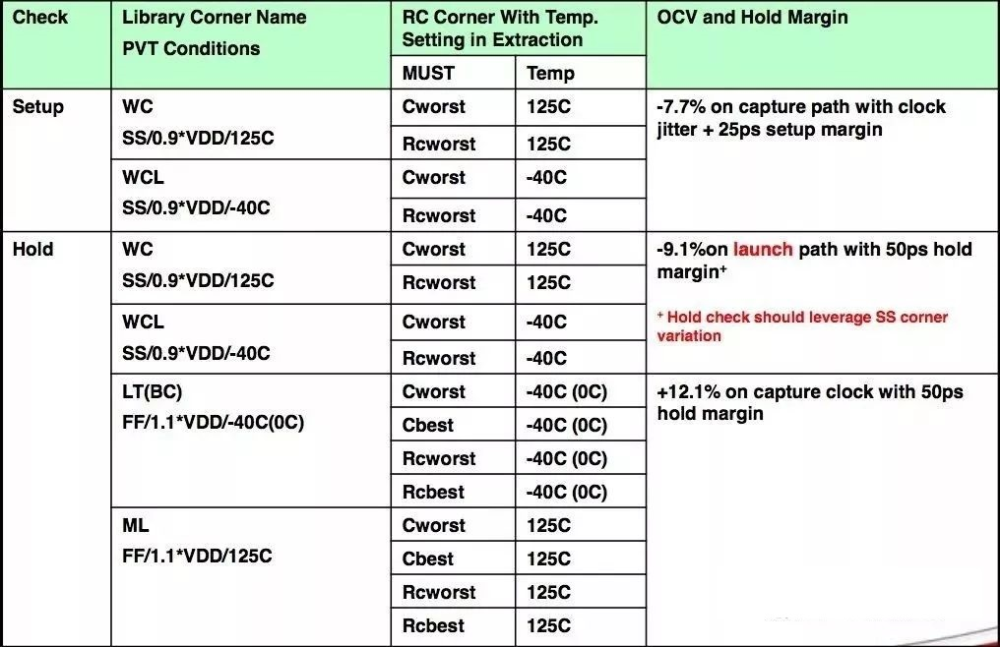

静态时序分析-基础
本文最后更新于：2023年11月13日 下午
- 参考
- 《集成电路静态时序分析与建模》
- 公众号：陌上风骑驴看IC
- 公众号：全栈芯片工程师
- https://blog.csdn.net/weixin_37584728/article/details/116974681
1. STA 相关基础知识
- DC 和 ICC工具中也嵌入了STA分析工具，timing
engine类似于STA，但是为了run time，精度降低了。
- 像后面介绍的STA的两种分析模式：GBA和PBA，DC和ICC中只支持GBA的分析。
- 时序分析
- 可分为静态时序分析和动态时序分析。
- 动态时序分析
- 通过网表和sdf文件，sdf将单元延迟和连线延迟反标到网表上；并给入大量的测试激励来验证电路的功能。
- 需要特殊注意几个验证点
- 典型应用场景的功能验证
- 频率的动态切换
- 跨时钟域信号是否正确同步
- PMU上电以及断电的顺序是否正确以及是否满足相应的时序要求
- Multi-Cycle等特别逻辑的功能是否正确
- 静态时序分析
- 将电路分割成大量的时序弧，根据CCS/NLDM模型计算器件延时，以及根据StarRC提取出的SPEF等将R/C反标到net上，并根据net delay计算连线延时。
- 获得timing_path的delay之后，与用户定义的sdc比较，给出是否满足需求。
- Signoff 阶段 STA需要做的分析
- 时序单元的相关约束：建立时间、保持时间、恢复时间、移除时间以及时钟信号最小脉冲宽度。
- 其中时钟信号脉宽必须要大于最小脉冲宽度，否则无法保证时序单元实现正常的逻辑功能。
- 恢复、移除时间的分析可以看这篇博客。
- DRC相关检查
- max/min transition
- max/min capacitance
- max_fanout
- SI（信号完整性）分析
- Bump/Glitch/Noise分析。
- 时序单元的相关约束：建立时间、保持时间、恢复时间、移除时间以及时钟信号最小脉冲宽度。
- 时序弧
- 静态时序分析是基于时序弧进行时序分析的，用来描述两个节点之间延时信息的数据。
- 一般分为连线延时和单元延时。器件延迟和连线延迟模型可见这篇博客。
- 更为详细的单元延迟时序弧分析可见《集成电路静态时序分析与建模》P21。
- MCMM & DMSA
2. RC网络
- 一个cell可以被模拟成输入电容、输出电容、上拉电阻和下拉电阻。
- 输入电容为前一级驱动的负载，输出电容为本级自身的负载。
- 上拉电阻/下拉电阻的大小决定了cell对负载电容充放电电流的大小，即驱动能力。
- 这篇博客中有介绍NLDM/CCS模型都是通过input
transition和output load可以在查找表中找到cell delay以及output
transition。
对于cell delay的计算，除了查找表之外，还有表头定义的四个attribute；这四个attribute决定了cell delay的定义方式。更为详细的介绍可见《集成电路静态时序分析与建模》P11。
1
2input_threshold_pct_fall :60;
output_threshold_pct_fall :50;transition的计算是逐级递进的，output transition是根据input_transition和output_load查找得到的。与cell_delay一样，也需要定义四个attribute，决定了rise/fall transition time的定义方式。
1
2
3
4slew_lower_threshold_pct_fall :20.0;
slew_upper_threshold_pct_fall :80.0;
slew_lower_threshold_pct_rise :10.0;
slew_upper_threshold_pct_rise :90.0;
3. PVT
芯片的健壮性要求我们需要在物理实现过程中额外考虑温度、电压以及工艺偏差的影响。
可以使用PVT、RC Corner以及OCV来模拟这些不可控的随机因素。
根据不同的工艺，foundary会提供一张SignOff的表格。这里首先介绍PVT。
- 下图中ss和ff分别为slow nmos,slow pmos 以及fast nmos,fast
pmos。为五种不同工艺角中的两种极限。
- 其中有一些温度为-40°，因为需要考虑温度翻转效应，也需要signoff。

- 下图中ss和ff分别为slow nmos,slow pmos 以及fast nmos,fast
pmos。为五种不同工艺角中的两种极限。
PVT的不理想性
- P：在制造过程中可能会出现偏差，导致管子的电阻和阈值电压以及宽长比可能会出现偏差。
- V：cell的延迟和电压有很大的关系，以单电压芯片为例，电池的供电电压本就在一个范围内变化，而且考虑片外/片上的voltage
regulator的误差，以及IR的影响，导致芯片上的每个管子都可能工作在不同的电压下。
- 必须保证IR Drop不能过大，否则芯片可能会因为得不到所需的电压而发生逻辑错误或停止工作。
- T：温度升高，一方面降低了Vt，使延迟更小；另一方面，降低了空穴和电子的迁移率，使延迟更大；而后者的影响比前者更大，所以温度升高会导致管子的延时增加。
但是一味的降低温度，并不能一直减小延时；因为晶体管存在温度翻转效应，当温度低到一个阈值之后，温度的降低会导致延时的增加。
4. RC Corner
- STA中主要包括五个RC Corner：Cbest、Cworst、RCbest、RCworst 和
RCtypical。
- Cbest：电容最小，电阻最大；Cworst：电容最大，电阻最小。
- RCbest：耦合电容最大，(对地电容*电阻)最小；RCworst：耦合电容最小，(对地电容*电阻)最大。
- Setup sign-off 的RC corner是: Cworst / RCworst
- RC corner的产生是考虑到对于90nm往下的工艺，network的电容占比越来越大。90nm往上的工艺，cell电容占主导。
- 对于短线，电容占主导，C corner就可以cover；但是对于长导线，电阻占主导地位，需要RC corner来cover。
- Hold time sign-off 的RC corner是: Cbest / RCbest / Cworst /
RCworst。
- 为什么对于hold，需要best和worst都考虑？
- 个人理解：不同RC corner以及PVT的组合，对于Hold path delay值较小的部分，四个角都存在，所以signoff需要覆盖所有的corner。
- 为什么对于hold，需要best和worst都考虑？
- 如果引入DPT(Double Patterning
Technology)，即在同一层layer要做两次mask，两次mask之间可能存在偏差，导致线间距发生变化，从而影响耦合电容值。
- 需要将这一因素考虑到RC Corner中，用于signoff需要额外加corner：Cworst_CCworst, RCworst_CCworst, Cbest_CCbest, RCbest_CCbest.
5. GBA & PBA
- 这两种是STA的两种timing分析模式。以下图为例。
- GBA (Graph Base Analysis)
下表为在setup/hold分析时，input transition的端口选择。
Gate setup 分析 hold 分析 OR B A NAND A B XOR A/B A/B NAN B A 从上表可以看到，对于setup/hold的分析都是选择的最悲观的input transition端口情况进行分析。
- PBA (Path Base Analysis)
与GBA分析相同的电路，其端口选择如下表。
Gate setup 分析 hold 分析 OR A A NAND B B XOR B B NAN A A 从上表可以看到，分析端口的选择是基于实际的时序路径。
- PBA & GBA
- 优缺点分析
- GBA计算比较悲观，而PBA计算更为真实。
- 但是考虑到PBA的计算方式相对复杂，所以 runtime 会比较久。
- 何时用PBA
- 默认情况下，PT都是使用GBA去进行分析的，如果在signoff时发现有较小（如<5ps）的violation，且已经优化到极致，可以用PBA模式分析，是否可以meet。
- PBA 模式还分为两种计算模式：Path和Exhaustive
- Path：基于GBA分析的结果，选择最差的路径重新用PBA计算同样的path.
- Exhaustive：基于每个endpoint，会重新计算这个终点上所有的timing path（最多25000条），然后选择其中最差的path再重新用PBA计算slack。
- 可以看到path计算方式并不能保证得到的时真正最差slack的path。但是通常这种方式速度较快，适用于我们想看下pba能带来多少timing的improvement。
- 而exhaustive是最真实的pba计算方式，但是它的runtime非常慢，适合于接近signoff最后阶段，violation的timing path较少时的情况。
- 优缺点分析